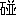

B 如何にして出易い牌を知るか
熟牌の出易すさは敢へて云はず、人夫れぞれ打ち方に依つて明らかに、次の打牌の解る場合がある。
一三或は二三を切る場合に、二或ひは三から先に捨てる人と、一から先に捨てる人とある。また下家が一二を切らなければ決して三を捨てぬといふ様に、吃される事を極度に恐れる人もいる。吃させぬが是か、させぬが非かは此処では論ぜず。しかし斯様ないぢけた麻雀を打つ人の方が反って釣手に引っかかったり、考へ過ぎて妙な打ち違ひをしたりするものである。
打牌性ほど一四七の原則に支配されるものはない。 が出れば、 が出れば、  は比較的出易くなる。普通の場合に於てはが安全なら もも安全な筈だからである。 は比較的出易くなる。普通の場合に於てはが安全なら もも安全な筈だからである。
そこで一四七とか二五八とか言ふ待ちは、非常に待ちが多くて良い聴牌の様に思はれる。しかし、さあ出ないとなったら、金輪際出ないといふ場合がある。そこへ行くと嵌張とか辺張、或いは単吊は一般に出易い位置にある。殊に単吊の如きは三副露、または四副露の場合をのぞく外、殆ど之を見破る事は難しいので、生牌の両門を待っているより、一枚出てゐる単吊の方が和り易い場合が多い。
待ちの多いのが和れずに嵌張、辺張、単吊が和るから、「麻雀は運である」と論ずる人が、以ての外の愚論である。勿論三つも四つも待ってゐるのに、単吊で上られればどうだと云ひ度くなるであらう。がそれは一局を見て全局を見ぬ井中の蛙である。以上のやうな理由で、簡畢で一番和り易い聴牌は二三三三といふであることは特に説明するまでもない。
さらに今一歩研究の範囲を狭めて見る。
如何程出易い牌で聴牌しても、それを看破されては何んにもならぬ。そこで此処で一苦労して見る必要がある。卑劣な作戦でなければ、相手をして観察をあやまらせ、或は迷はせるのは立派な戦法である。
例、  他の６枚は何んでも艮い。 他の６枚は何んでも艮い。
このようにある場合、五つの変化を考へる事が出きる。
１．が出た場合
を切つて  を待つのが当然であり、定石である。 を待つのが当然であり、定石である。
２．が出た場合
定石から云へば、を捨てる可きであるが、聴牌を明らかに看破される不利があるから、を切るのが面白い。計画、図に当たってを釣り出し得たら、こんな愉快な事はないであらう。
３．を打って来た場合
多くの場合ポンしてはならぬ。聴牌を急がす、 、又は、 の来るを待ってを捨てるのが良い。をしてを打って、相手を打ち上けるが如きは、いやしくも有段者級を以って任ずる者の、恥づ可き事である。
４．上家が聴牌以前、或いは吃又はに依って聴牌になったらしい時、を打って来た場合
、で吃してを捨てるのが普通であるが、が生牌で且つが出てゐる場合には、で吃してを拾てるのが安全である。
前記の如き條件のもとに、を棄ててきた敵に対しては、 こそ危険であるが、で待つ事は先づ無いと看て差支へないからである。
５．上家がを捨てて来た場合
で吃してを切る可きである。此の場合、はよりはるかに危険であるのと、に関係するは出易いからである。
不充分な説ではあるが、以上の様な簡単な場合に於てすら、尚且、多くの変化を蔵しているのである。種々の場合を示して、この変化を−々説明する煩を避けて、あとは読者の研究にまかせ、次稿へ進む事にする。
|